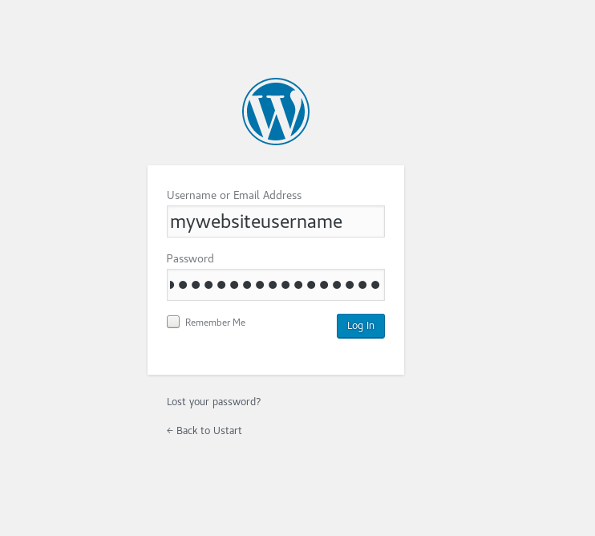

وردپرس (Wordpress)
نصب و راه اندازی وب سایت با استفاده از وردپرس
وردپرس نصب وردپرس آموزش وردپرس راهنمای وردپرس
وردپرس (WordPress) چیست؟
وردپرس () یک سیستم مدیریت محتوا است که با زبان برنامهنویسی (PHP) نوشته شده است. وردپرس متن باز است و مجوز آزاد دارد. شما میتوانید آن را رایگان و آزادانه دانلود کرده و بر روی سیستم وب سرور خود نصب نمایید. وردپرس برای ساخت وبسایتهای مختلفی کاربرد دارد که همهی آنها پویا () هستند. به همین منظور از پایگاه داده مایاسکیوال (MySql) برای نگهداری محتوا استفاده مینماید.
وردپرس امکانات بسیار زیادی در اختیار شما قرار خواهد داد، مانند انواع پوستهها (Themes) و افزونهها (Plugins) نظیر پرداخت مالی، تبدیل وبسایت به یک فروشگاه، افزونه مدیریت کاربران و بسیاری امکانات دیگر.
وردپرس بیشترین آمار نصب را نسبت به باقی سیستمهای مدیریت محتوا و سایتسازها دارد و بیشتر وبسایتهای جدید با وردپرس ساخته میشوند.
نصب و پیکرهبندی وردپرس (wordpress setup)
بیشتر شرکتهای خدمات هاستینگ در کنترل پنل خود امکانات نصب خودکار وردپرس و برخی دیگر از CMSها را در اختیار شما قرار خواهند داد.
اما در صورتی که میخواهید خودتان نصب نمایید و کنترل کامل این روند را در دست داشته باشید در ادامه با ما همراه باشید.
دانلود وردپرس
برای دانلود بسته وردپرس به وبسایت ( مراجعه نمایید. سپس فایل فشرده (zip) آن را دانلود نمایید.
https://www.wordpress.org
پیشنیازهای نصب وردپرس
برای نصب وردپرس شما تنها به یک دیتابیس (Databse MySQL) و پیاچپی (PHP) و کمی فضا نیازمندید که تمامی آنها را در هاست شما در اختیار شما قرار خواهد داد.
PHP version 5.2.4 or greater
MySQL version 5.0.15 or greater or any version of MariaDB
ایجاد پایگاه داده (Database)
سادهترین روش برای ساختن یک دیتابیس برای تازهکاران، ساختن آن از کنترل پنل هاست میباشد. با توجه به نوع کنترل پنل شما (Control Panel) به بخش دیتابیس (Databases) رفته و یک پایگاه داده (همان دیتابیس) ایجاد نمایید. برای اینکار شما ابتدا نیازمند یک حساب کاربری و پسورد برای پایگاه داده خود هستید که تمام آنها را در بخش پایگاه داده خود میتوانید ایجاد کنید. روند اینکار کاملا تحت وب میباشد و با چند کلیک ساده قابل انجام است.
حتما از یک رمز قوی استفاده نمایید. پیشنهاد ما استفاده از رمزساز خود کنترل پنل شما است که در برگه ساخت پسورد شما وجود دارد.
یوزر و پسورد خود را یادداشت کنید. فراموش نکنید که هرگز یوزر و پسورد خود را در اختیار کسی قرار ندهید!
مراحل ایجاد پایگاه داده در سیپنل (cPanel)
در کنترل پنل به بخش دیتابیسهای مایاسکیوال بروید (MySQL Databases)
سپس یک نام برای دیتابیس خود برگزینید و دکمه ساخت را بزنید (Create Database). پس از ساخت گزینههای مختلف دیتابیس شما فعال میشوند.
شما نیاز به ساخت یک یوزر برای استفاده از دیتابیس را دارید. در ادامه همان صفحه یک یوزر برای خود بسازید و پسورد آنرا در جایی امن ذخیره کنید.
سپس برای دسترسی به دیتابیس توسط یوزر، نیاز به تنظیم و دادن مجوز به یوزر خود را دارید. برای اینکار به قسمت (Add User To Database) در همان برگ بروید و روی دکمه (Add) کلیک نمایید. توجه کنید که یوزرنیم و دیتابیس درست را انتخاب کرده باشید (خصوصاً درصورت داشتن دیتابیس و یوزرهای دیگر).
سپس در ادامه گزینه تمام مجوزها را (ALL PRIVILEDGES) کلیک نمایید تا یوزر شما قادر به انجام تمام عملیات بر روی دیتابیس گردد.

درنهایت یوزر و دیتابیس شما برای راه اندازی آماده میباشد.
بارگذاری وردپرس بر روی سرور
برای اینکار میتوانید از ftp استفاده نمایید اما ما راه سادهتر آن را پیشنهاد میکنیم. کافیست در کنترلپنل خود رفته، سپس وارد بخش مدیریت فایل (File Manager) شوید. آنگاه داخل پوشه public_html شده و گزینه آپلود (Upload) را بزنید. سپس فایل وردپرسی را که دانلود نمودهاید را از داخل کامپیوتر خود انتخاب کرده و بارگذاری () کنید.
البته شما در هر پوشهی دیگری میتوانید اینکار را انجام دهید اما برای راحتی و امنیت در همین پوشه انجام دهید.پوشه public_html در حقیقت پوشه اصلی فایلهای وبسایت شما میباشد. هرگونه فایل مرتبط با وبسایت شما که باید در دسترس اینترنت قرار گیرد، در این پوشه قرار خواهد گرفت. آدرس وبسایت شما (دامنه - domain) به این پوشه اشاره دارد (متصل است).
پس از آپلود شدن بر روی وبسرور، کافیست تا فایل را انتخاب کرده و آن را اکسترکت (Extract) نمایید. پس از آن یک پوشه به نام wordpress خواهید داشت. اینجا شما یک مشکل خواهید داشت و آن این است که وبسایت وردپرسی شما در آدرس شما اجرا نمیشود بلکه در زیر آدرس http://yourwebsite.com/wordpress اجرا خواهد شد.
http://www.yourwebsitename.com/wordpress
برای اینکه وبسایت در آدرس درست خود ایجاد شود، به داخل پوشه wordpress رفته و تمامی فایلهای آن را به پوشه public_html انتقال (Move) دهید.
این مراحل در کنترل پنل سیپنل (cPanel) میباشد ولی مراحل در همهی کنترل پنلها شبیه هستند.
مراحل آپلود و آماده سازی پوشهها در سیپنل
وارد مدیریت فایل (file manager) شوید سپس پوشه (public_html) را انتخاب نمایید و گزینه آپلود (Upload) را بزنید تا به برگه آپلود هدایت شوید. در آنجا با زدن دکمه (Select File) فایل خود را از روی سیستم خود انتخاب کرده و آپلود نمایید. پس از آپلود گزینه بازگشت به مدیریت فایل را کلیک نمایید.


بعد از آن فایل فشرده را انتخاب و گزینه (Extract) را کلیک کرده، آنگاه مسیر پوشه (public_html) را انتخاب نمایید و دکمه (Extract Files) را کلیک کنید.
وارد پوشه (wodpress) شده و گزینه (Select All) را بزنید تا تمام فایلها انتخاب شوند. سپس گزینه (Move) را کلیک کنید و آدرس پوشه (public_html) را بدهید، روی دکمه (Move Files) کلیک نمایید.
پس از آن شما میتوانید پوشه (wordpress) که هم اکنون خالی است و فایل فشرده وردپرس را پاک نمایید.
عکسها در کنترل پنل سیپنل (cPanel) گرفته شدهاست. همچنین وب سرور آپاچی (Apache) استفاده گردیده و ممکن است در باقی وب سرورها نام فولدرها و مراحل کمی تغییر داشته باشد اما مسیر اصلی یکسان است.
نصب آسان وردپرس
اکنون که فایلها در جای درست خود قرار گرفتهاند، کافیست تا به آدرس وبسایت خود مراجعه کنید و مراحل نصب وردپرس را دنبال کنید.
فراموش نکنید که یوزر و پسورد و نام دیتابیس خود را یادداشت کرده و آماده داشته باشید. همچین هرچه سریعتر عملیات نصب را تا انتها دنبال کنید و نصب را کامل نمایید.
مراحل تصویری نصب وردپرس
وارد آدرس وبسایت خود شوید. در آنجا میتوانید زبان دلخواه خود را انتخاب کنید (بله زبان فارسی و بسیاری دیگر از زبانها را نیز در خود جای داده است). سپس به صفحهی توضیحات قبل از نصب و پیشنیازها وارد میشوید.
پس از آن وارد برگهی مشخصات میگردید و مشخصات دیتابیس و یوزر و پسورد را مطابق همان که ساختهاید وارد نمایید (پسورد به حروف بزرگ و کوچک حساس میباشد!).
- اگر در مشخصات هاست شما و کنترل پنل شما آدرس دیگری برای دیتابیس وارد شده است آن را وارد بخش (Database Host) نمایید در غیر اینصورت به همان صورت پیش فرض (localhost) رها کنید.
- گزینه (Table Prefix) برای جداول دیتابیس شما است تا درصورتی که فقط یک دیتابیس دارید، بخش وردپرس از باقی جدا شود و کنترل و نگهداری دیتابیس راحتتر گردد. این قسمت را بصورت دلخواه نامگذاری کنید.
بعد از آن به صفحهی اجرای نصب میروید و روی گزینه (Run the installation) کلیک نمایید تا نصب وردپرس آغاز گردد.
در گام بعدی شما مشخصات حساب کاربری خود وبسایتان را بطور دلخواه وارد میکنید.
حتما از یک کلمه عبور (password) بسیار قوی استفاده نمایید و هرگز آن را به کسی نگویید.
در قسمت کادر ایمیل، حتما یک ایمیل فعال وارد نمایید تا درصورت فراموشی پسوردتان نیاز به تنظیمات سخت هاست و تغییر برخی فایلها نگردید و با یک ایمیل تغییر پسورد به راحتی پسورد جدید برای خودتان بسازید. همچنین وردپرس برای ارتباط با شما از این ایمیل استفاده میکند.
درصورتی که نمیخواهید وبسایت شما توسط موتورهای جستجوگر مثل گوگل و یاهو، جستجو و ثبت شود گزینه آخر را انتخاب کنید (البته این به موتورها جستجو بستگی دارد که چقدر به انتخاب شما احترام بگذارند).
درنهایت روی دکمه نصب وردپرس کلیک کنید و وارد نصب گردید.
تمامی مراحل نصب خودکار (و سریع) بوده و پس از نصب میتوانید با وارد کردن مشخصات کاربری که در قب ساختهاید وارد صفحه مدیریت وبسایت خودتان شوید!

آدرس پیشفرض ورود به وبسایتهای وردپرس به صورت زیر میباشد.
یک (/wp-admin/) به انتهای آدرس وبسایتان اضافه کنید!
http://www.yourwebsite.com/wp-admin/
تبریک میگویم اکنون شما صاحب وبسایت وردپرسی خودتان هستید!